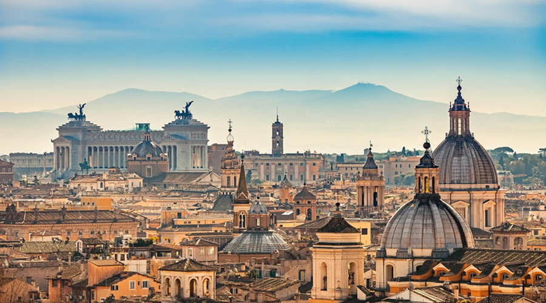
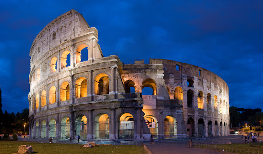
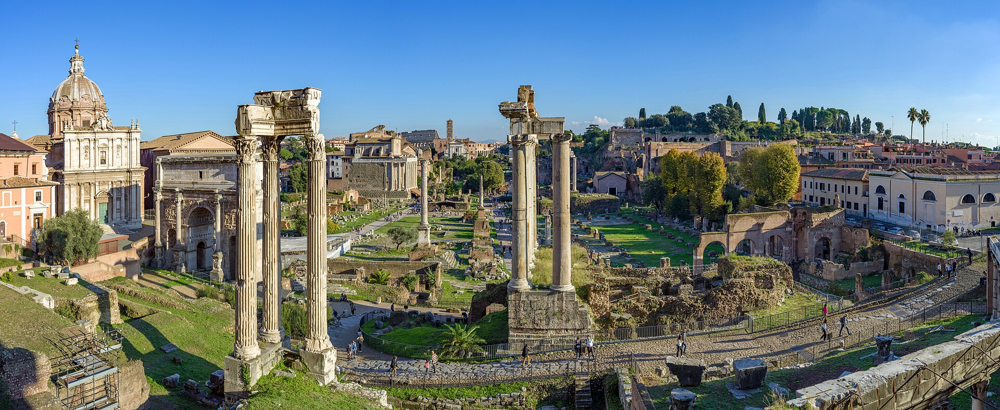
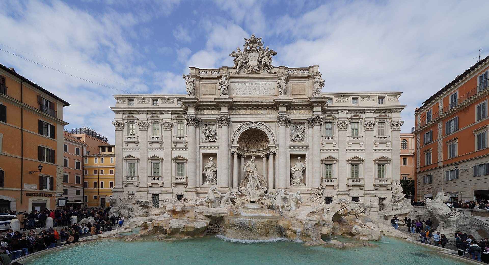
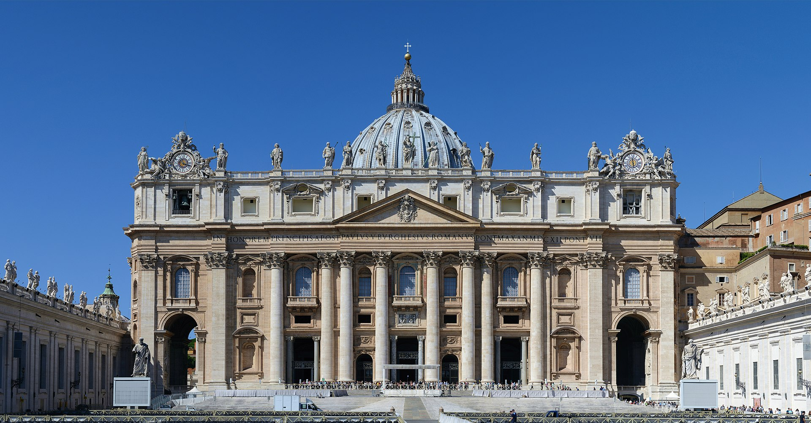

rzym

Rzym to stolica Włochy i jedno z najstarszych oraz najważniejszych miast w historii Europy. Leży w środkowej części kraju, nad rzeką Tyber. Często nazywany jest „Wiecznym Miastem”, ponieważ jego historia sięga ponad 2,5 tysiąca lat. Rzym został według legendy założony w 753 r. p.n.e. przez Romulus. W starożytności był stolicą potężnego Imperium Rzymskiego, które obejmowało tereny niemal całej Europy, północnej Afryki i części Azji. Do dziś w mieście można podziwiać liczne zabytki z czasów antycznych.
koloseum

Amfiteatr w Rzymie, wzniesiony w latach 70–72 do 80 n.e. przez Wespazjana i Tytusa – cesarzy z dynastii Flawiuszów.
Jest to duża, eliptyczna budowla o długości 188 m i szerokości 156 m, obwodzie 524 m, wysokości 48,5 m, z pojemną widownią, która mogła pomieścić od 45 do 50 tysięcy widzów[2]; z galeriami komunikacyjnymi oraz areną z systemem podziemnych korytarzy. W czterokondygnacyjnym podziale zewnętrznym zastosowano spiętrzenie porządków (najniższa kondygnacja w porządku toskańskim, druga w jońskim, trzecia w korynckim). Trzy niższe kondygnacje związane są z konstrukcyjnym układem arkad, czwarta, najwyższa została zaopatrzona tylko w małe okna. Od strony wewnętrznej budowla jest pięciokondygnacyjna. Cztery kondygnacje zbudowano jako układ pomieszczeń wydzielonych pomiędzy filarami, ścianami, ze sklepieniami kolebkowymi i krzyżowymi. Umieszczono tam bufety, szatnie, natryski, pomieszczenia dla gladiatorów, klatki dla zwierząt, korytarze. Wokół areny wzniesione było podium. Do Koloseum prowadziło 80 ponumerowanych wejść (zachowały się oznaczenia wejść od nr XXIII do LIV), które zapewniały szybkie (przez ok. 6 minut) opuszczenie widowni przez widzów (jednak taką możliwość mieli tylko widzowie z dolnych i środkowych rzędów). Istniała też możliwość przykrycia całej widowni specjalną osłoną (velarium) w deszczowe lub bardzo słoneczne dni.
panteon

Panteon w Rzymie (łac. Pantheon, z greckiego Πάνθειον, pan – wszystko, theoi – bogowie, panteon – miejsce poświęcone wszystkim bogom) – okrągła świątynia na Polu Marsowym, ufundowana przez cesarza Hadriana w roku 126 na miejscu wcześniejszej z 27 r. p.n.e., zniszczonej w pożarze w 64 r. n.e.
Panteon to jeden z najlepiej zachowanych zabytków starożytnego Rzymu i jedno z najważniejszych osiągnięć architektury antycznej. Znajduje się w centrum Rzymu, na Piazza della Rotonda. Pierwszą świątynię w tym miejscu wzniósł w 27 r. p.n.e. Marek Agrypa, współpracownik cesarza Augusta. Obecny budynek powstał jednak około 125 r. n.e. za panowania cesarza Hadrian. Mimo przebudowy zachowano pierwotną inskrypcję Agrypy na frontonie. W 609 r. świątynię przekształcono w kościół chrześcijański – Santa Maria ad Martyres, co przyczyniło się do jej doskonałego zachowania.Budynek jest rotundą o średnicy 43,6 m i takiej samej wysokości. Ma jednoprzestrzenne wnętrze, otoczone przez 7 kaplic[8].Przed wejściem do świątyni znajduje się dobudowany trzyrzędowy portyk składający się z 16 kolumn w porządku korynckim, z czego 8 ustawionych jest w pierwszym rzędzie. Uważa się, że jest to pronaos[9]. Wieńczy go fronton, pod którym, na belkowaniu widnieje inskrypcja: M AGRIPPA L F COS TERTIVM FECIT/M(arcus) Agrippa L(ucii)F(ilius) CO(n)S(ul) TERTIVM FECIT, którą można przetłumaczyć jako „Wzniesiony przez Marka Agryppę, syna Lucjusza, kiedy był po raz trzeci konsulem”. Wysokość portyku wraz z tympanonem wynosi 25,0 m.
Mapa na stronie www
forum romanum

Forum Romanum (Forum Magnum) – najstarszy plac miejski w Rzymie, otoczony sześcioma z siedmiu wzgórz: Kapitolem, Palatynem, Celiusem, Eskwilinem, Wiminałem i Kwirynałem. Główny polityczny, religijny i towarzyski ośrodek starożytnego Rzymu, miejsce najważniejszych uroczystości publicznych.
Forum Romanum było najważniejszym placem starożytnego Rzymu i przez wiele stuleci stanowiło centrum życia politycznego, religijnego oraz społecznego miasta. Położone między wzgórzami Palatynem i Kapitolem, początkowo było podmokłą doliną, którą osuszono dzięki budowie kanalizacji zwanej Cloaca Maxima. Z czasem stało się sercem rozwijającej się republiki, a później cesarstwa rzymskiego. To tutaj odbywały się zgromadzenia ludowe, przemówienia polityczne, uroczystości religijne, procesy sądowe oraz triumfy zwycięskich wodzów. Na terenie Forum wznosiły się liczne świątynie, bazyliki i łuki triumfalne. Jedną z najważniejszych budowli była świątynia Saturna, w której przechowywano skarb państwa, oraz Kuria – miejsce obrad senatu. Znajdowała się tu także mównica zwana Rostra, z której przemawiali najwybitniejsi politycy, między innymi Juliusz Cezar. W późniejszym okresie wzniesiono również okazałe łuki triumfalne, takie jak łuk Septymiusz Sewera, upamiętniający zwycięstwa militarne. W czasach cesarstwa Forum Romanum było symbolem potęgi Rzymu i centrum administracyjnym ogromnego imperium. Z biegiem wieków jego znaczenie stopniowo malało, a po upadku cesarstwa zachodniorzymskiego budowle zaczęły popadać w ruinę. W średniowieczu teren ten służył nawet jako pastwisko. Dopiero w XIX wieku rozpoczęto systematyczne prace archeologiczne, które odsłoniły pozostałości starożytnych budowli. Dziś Forum Romanum jest jednym z najważniejszych stanowisk archeologicznych świata i stanowi świadectwo dawnej świetności starożytnego Rzymu, przyciągając miliony turystów każdego roku.
fontanna di trevi

Fontanna di Trevi (wł. Fontana di Trevi) – najbardziej znana barokowa fontanna w Rzymie, w rione Trevi
Fontanna di Trevi jest najsłynniejszą i największą barokową fontanną w Rzymie oraz jednym z najbardziej rozpoznawalnych zabytków Włoch. Została zbudowana w XVIII wieku na polecenie papieża Klemensa XII, a jej projekt stworzył architekt Nicola Salvi. Budowę ukończono w 1762 roku już po jego śmierci, za pontyfikatu papieża Klemensa XIII. Fontanna przylega do fasady pałacu Palazzo Poli i stanowi monumentalną kompozycję rzeźbiarską. W centralnej części znajduje się postać boga mórz – Neptun – stojącego na rydwanie w kształcie muszli, ciągniętym przez dwa trytony i dwa konie morskie, symbolizujące zmienność natury oceanu. Całość wykonana jest z jasnego trawertynu i zachwyca bogactwem detali oraz dynamiką przedstawionych postaci. Nazwa fontanny pochodzi od łacińskiego słowa „trivium”, oznaczającego skrzyżowanie trzech dróg, ponieważ w tym miejscu zbiegają się trzy ulice. Do fontanny doprowadzona jest woda z antycznego akweduktu Aqua Virgo, zbudowanego w czasach cesarza Augusta. Fontanna di Trevi znana jest także z tradycji wrzucania monet. Według legendy wrzucenie jednej monety przez prawe ramię zapewnia powrót do Rzymu, dwie monety – znalezienie miłości, a trzy – ślub. Każdego dnia z fontanny wyławiane są tysiące euro, które przeznacza się na cele charytatywne. Dziś Fontanna di Trevi jest jednym z najczęściej odwiedzanych miejsc w Rzymie i symbolem romantycznej atmosfery Wiecznego Miasta.
bazylika św.piotra

Bazylika Świętego Piotra na Watykanie (wł. Basilica Papale di San Pietro in Vaticano; łac. Basilica Sancti Petri) – rzymskokatolicka bazylika na Wzgórzu Watykańskim, zbudowana w latach 1506–1626, na miejscu starszej bazyliki wczesnochrześcijańskiej, fundacji cesarza Konstantyna Wielkiego, jedna z czterech bazylik większych Rzymu oraz jedna z wielu bazylik papieskich (dawniej patriarchalnych), sanktuarium, jeden z najważniejszych ośrodków pielgrzymkowych.
Wedle tradycji bazylika stoi na miejscu pochówku św. Piotra, uznawanego przez katolików za pierwszego papieża – jego grób leży pod głównym ołtarzem. Świątynia jest nekropolią papieży, w tym świętych m.in. Leona Wielkiego, Leona III, Grzegorza Wielkiego, Piusa X, Jana XXIII i Jana Pawła II. Miejsce obrad dwóch ostatnich soborów Kościoła katolickiego – Watykańskiego I i Watykańskiego II. Czołowe dzieło architektury renesansu i baroku, z bardzo bogatym wystrojem wnętrza, gdzie znalazły się również zabytki pochodzące z dawnej konstantyńskiej bazyliki zbudowanej w tym miejscu (m.in. brązowa figura św. Piotra Arnolfa di Cambio). W okresie nowożytnym swoje dzieła sztuki wykonali tu Michał Anioł (Pietà watykańska), Gianlorenzo Bernini (m.in. ołtarz świętego Piotra z baldachimem, Cathedra Petri, nagrobki papieży Aleksandra VII i Urbana VIII, figura św. Longinusa), Alessandro Algardi, Antonio Canova, Bertel Thorvaldsen.